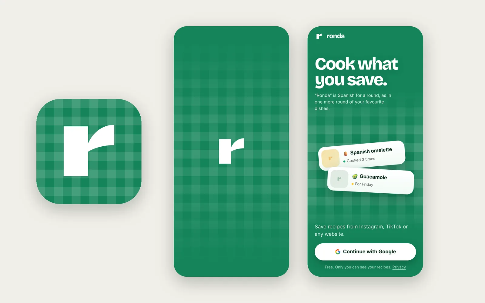

The problem
We save hundreds of recipes. We cook almost none of them.
Recipes live in Instagram saves, TikTok bookmarks and screenshots. When it’s time to decide what to eat, they’re impossible to find, and the captions are written for engagement, not for cooking: stories before the ingredients, amounts in slang (“a pinch”, “un chorrito”), whole ingredient lists on one line.
I use recipe apps every week and none of them fitted how my friends and I actually cook: the same twenty favourite dishes, on rotation, with a new one tried now and then.
The idea
Ronda is Spanish for a round, as in one more round of tapas. The product is built around repetition: save a recipe from any link in one tap, see how often you cook each dish, and get nudged towards the ones you haven’t made in a while.
- Save from anywherePaste an Instagram, TikTok or web link, or a photo of a cookbook page. The recipe comes out clean.
- Cook againEvery recipe counts how many times you’ve made it and how often, so favourites resurface on their own.
- Plan the weekA light plan, not a meal-prep spreadsheet, with a shopping list that merges ingredients across recipes.
- Built for the kitchenBold amounts you can read from a metre away, servings that rescale everything, a step-by-step cooking mode with timers.
Key decisions
Navigation by frequency, not by data model
I first folded Favourites into Recipes as a filter, because technically that’s what it is. Thinking about real use changed my mind: cooking a favourite is the most frequent thing people do in the app, so it got its tab back. The shopping list, used weekly, moved inside Plan with a badge for what’s left to buy. The tab bar now follows how often each moment happens: Recipes, Favourites, Fridge, Plan, Profile.
“Fridge”: start from what you have
A filter would have been the obvious answer to “what can I cook with this courgette?”. I made it a tab instead: tap what’s in your fridge (your most used ingredients, with counts, so nothing leads to zero results) and get recipes with everything you have, then those missing just one thing. A strict filter returned almost nothing with three ingredients; ranking by what’s missing always gives you something to cook.
An importer that cleans up after social media
Every import runs through a repair step: stories and sign-offs move to notes, number words become digits, kitchen slang becomes real amounts in four languages, run-on ingredient lists are split, long methods become short steps. Run on my own collection, it fixed 110 of 295 recipes, each change reviewed before it was applied, with an undo.
Mobile first, then a real desktop
Ronda is a PWA installed on the home screen. On a computer the bottom bar becomes a sidebar, recipes go two-column with the ingredients beside the steps, and every touch gesture has a mouse and keyboard twin: hover to delete instead of swipe, arrow keys in cooking mode.
Identity
The brand comes from the table: a green gingham tablecloth that runs from the app icon to the launch screen and the profile. The mark is a single lowercase r drawn in Syne, simple enough to read at 16 px. It took many rounds: literal food icons and hand-drawn letters were rejected for feeling dated or generic.

Designing with AI
I designed and shipped Ronda on my own, working with Claude as my engineering team. I set the direction, the product decisions and the quality bar; the AI wrote the code, generated design options, wrote automated tests and reviewed flows against UX heuristics.
- Direction stays humanMost of my time went into deciding, reviewing and saying no: to logos that felt generic, to a navigation that fought real habits.
- Real use finds real bugsI tested on my phone and with friends. iOS quirks, like fixed bars drifting with the keyboard open, only show up in real use.
- Guardrails89 automated tests cover parsing, scaling and imports, so each fix stays fixed.
- Faster loopsAn idea in the morning was in my friends’ hands by the evening, which changes how much you can learn from them.
What’s next
Ronda is used by a small group of friends, in Spanish, English, Dutch and French. Next is sharing cookbooks: send a whole cookbook as a link and let a friend save the recipes she wants, without building a social network.